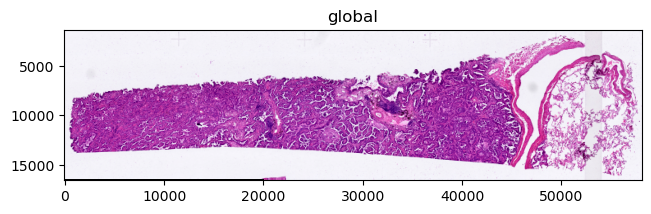
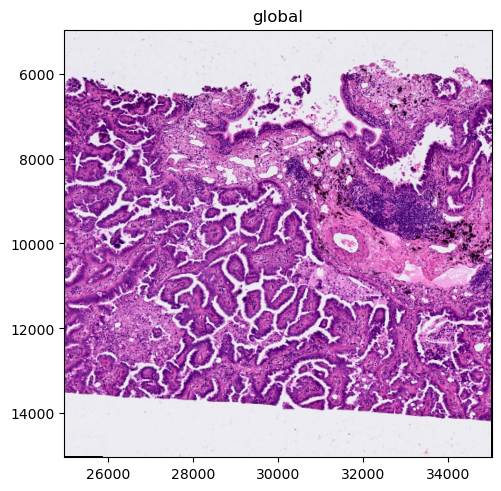
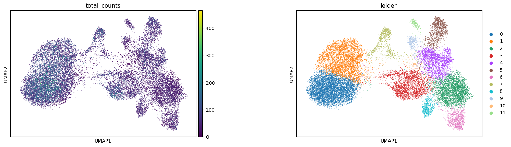
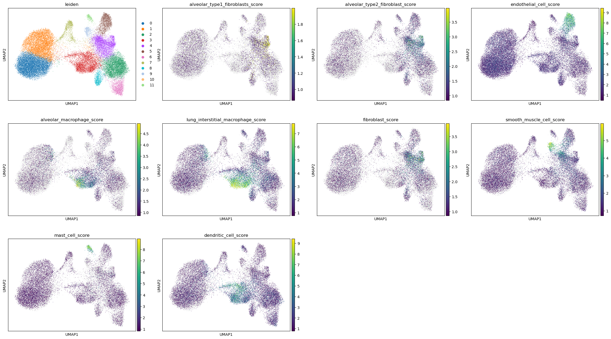
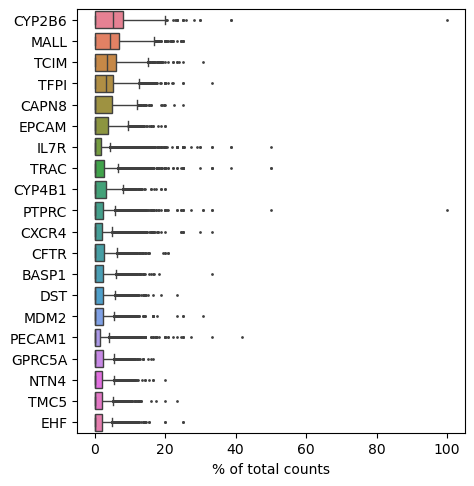
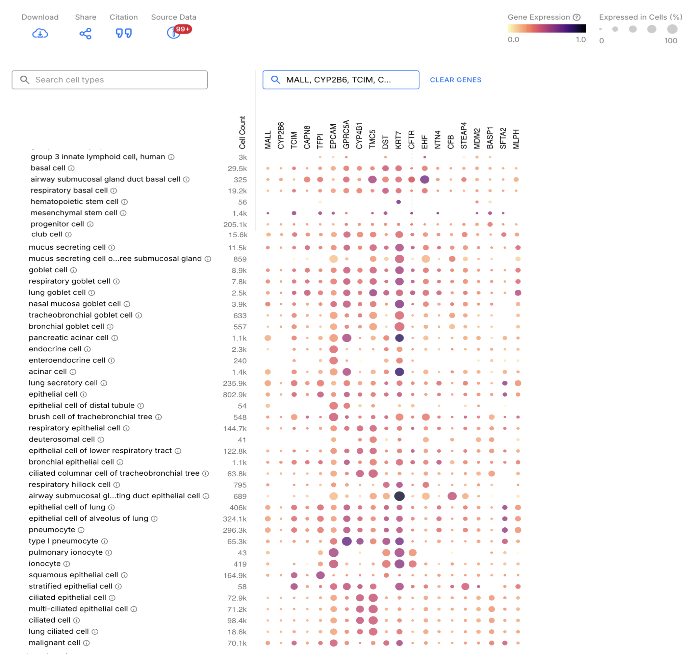
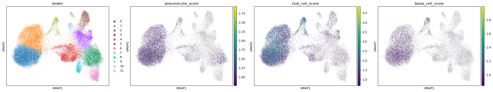
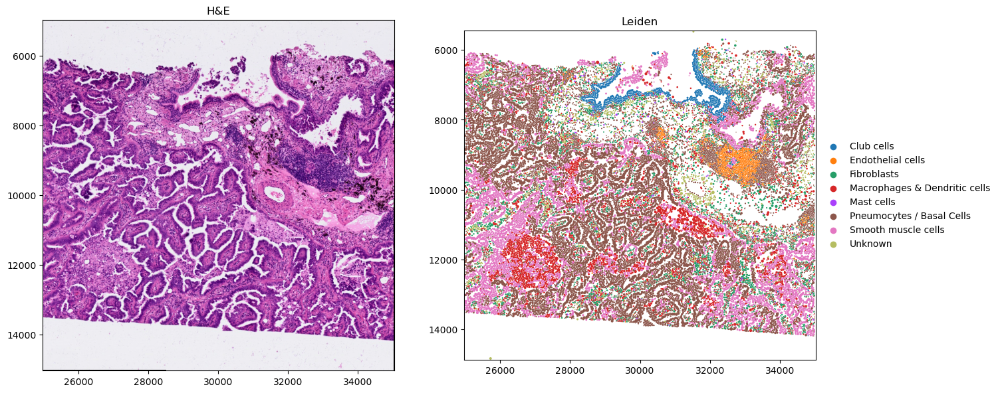
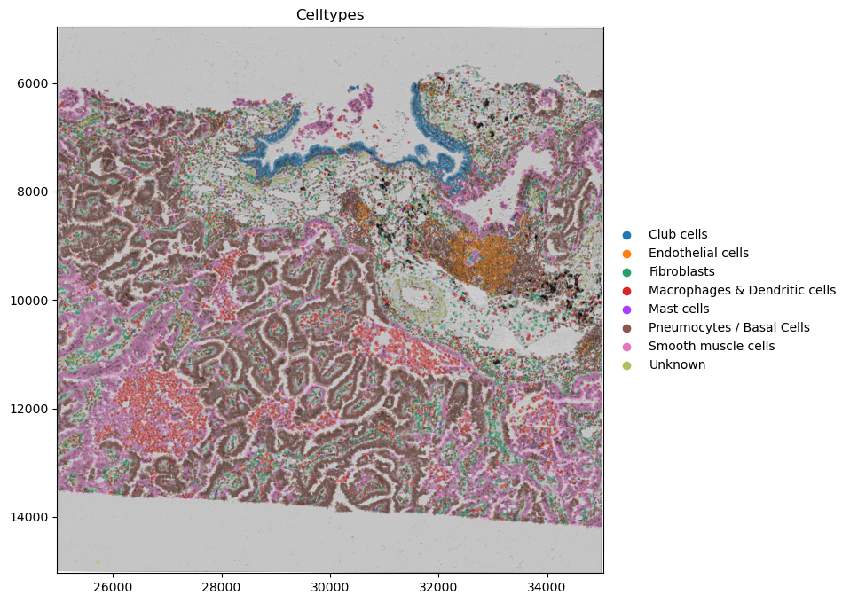
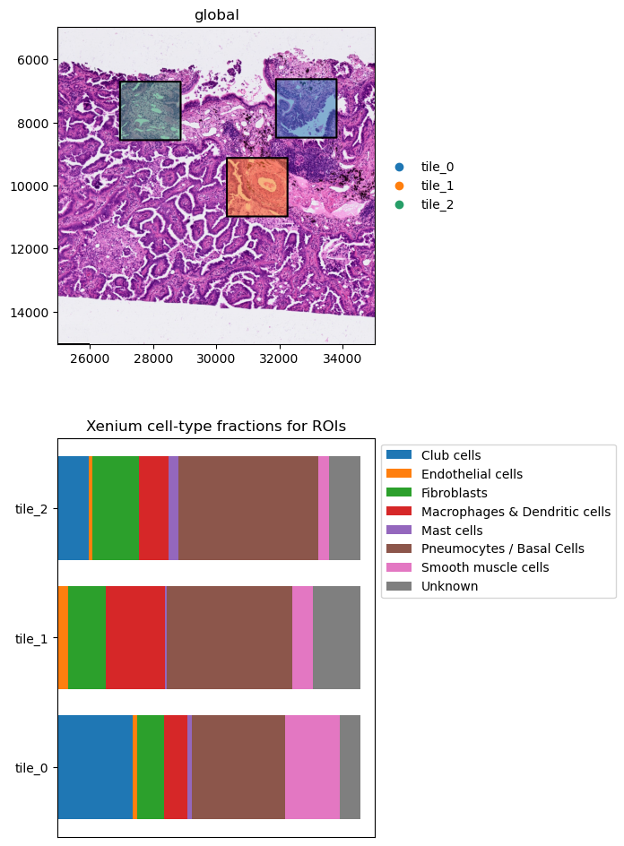

Basic analysis methods within the spatialdata ecosystem#
In this notebook, we will show how scanpy can be used to perform dimensionality reduction and clustering on Xenium data.
A SpatialData object is interoperable with external methods thanks to its modular design that builds upon established data structures.
For instance, in this notebook the decoupling of the geometries and the gene expression annotations for cells allows us to operate on the AnnData table using scanpy, store back the results in the SpatialData object and plot the processed data using spatialdata-plot.
⚠️ Adjust the variable below to the data path on your specific workstation.
data_path = "../data/"
import spatialdata as sd
import spatialdata_plot as sdp
import matplotlib.pyplot as plt # for multi-panel plots later
import scanpy as sc
import squidpy as sq
import pandas as pd
for p in [sd, sdp, sc, sq]:
print(f"{p.__name__}: {p.__version__}")
sdata_xenium = sd.read_zarr(data_path + "xenium.zarr")
sdata_xenium
spatialdata: 0.3.0
spatialdata_plot: 0.2.9
scanpy: 1.11.0
squidpy: 1.6.6.dev9+g78ed95c.d20250331
/Users/tim.treis/anaconda3/envs/spatialdata-workshop/lib/python3.11/site-packages/anndata/_core/aligned_df.py:68: ImplicitModificationWarning: Transforming to str index.
warnings.warn("Transforming to str index.", ImplicitModificationWarning)
SpatialData object, with associated Zarr store: /Users/tim.treis/Documents/GitHub/202504_workshop_GSCN/notebooks/day_2/spatialdata/data/xenium.zarr
├── Images
│ ├── 'he_image': DataTree[cyx] (3, 5636, 1448), (3, 2818, 724), (3, 1409, 362), (3, 704, 181), (3, 352, 90)
│ └── 'morphology_focus': DataTree[cyx] (1, 17098, 51187), (1, 8549, 25593), (1, 4274, 12796), (1, 2137, 6398), (1, 1068, 3199)
├── Labels
│ ├── 'cell_labels': DataTree[yx] (17098, 51187), (8549, 25593), (4274, 12796), (2137, 6398), (1068, 3199)
│ └── 'nucleus_labels': DataTree[yx] (17098, 51187), (8549, 25593), (4274, 12796), (2137, 6398), (1068, 3199)
├── Points
│ └── 'transcripts': DataFrame with shape: (<Delayed>, 11) (3D points)
├── Shapes
│ ├── 'cell_boundaries': GeoDataFrame shape: (162254, 1) (2D shapes)
│ ├── 'cell_circles': GeoDataFrame shape: (162254, 2) (2D shapes)
│ └── 'nucleus_boundaries': GeoDataFrame shape: (156628, 1) (2D shapes)
└── Tables
└── 'table': AnnData (162254, 377)
with coordinate systems:
▸ 'global', with elements:
he_image (Images), morphology_focus (Images), cell_labels (Labels), nucleus_labels (Labels), transcripts (Points), cell_boundaries (Shapes), cell_circles (Shapes), nucleus_boundaries (Shapes)
Subset the Xenium data for the scope of this workshop#
print(
f"Data has {sdata_xenium.points['transcripts'].compute().shape[0]} transcript locations."
)
sdata_xenium.pl.render_images("he_image").pl.show()
Clipping input data to the valid range for imshow with RGB data ([0..1] for floats or [0..255] for integers). Got range [-0.18137255..1.0].
Data has 12165021 transcript locations.

sdata_crop = sdata_xenium.query.bounding_box(
axes=["x", "y"],
min_coordinate=[25000, 5000],
max_coordinate=[35000, 15000],
target_coordinate_system="global",
)
print(
f"Crop has {sdata_crop.points['transcripts'].compute().shape[0]} transcript locations."
)
sdata_crop.pl.render_images("he_image").pl.show()
/Users/tim.treis/anaconda3/envs/spatialdata-workshop/lib/python3.11/functools.py:909: UserWarning: The object has `points` element. Depending on the number of points, querying MAY suffer from performance issues. Please consider filtering the object before calling this function by calling the `subset()` method of `SpatialData`.
return dispatch(args[0].__class__)(*args, **kw)
Clipping input data to the valid range for imshow with RGB data ([0..1] for floats or [0..255] for integers). Got range [-0.094420604..1.0].
Crop has 2683201 transcript locations.

sdata_crop.tables["table"]
AnnData object with n_obs × n_vars = 33727 × 377
obs: 'cell_id', 'transcript_counts', 'control_probe_counts', 'control_codeword_counts', 'unassigned_codeword_counts', 'deprecated_codeword_counts', 'total_counts', 'cell_area', 'nucleus_area', 'region', 'z_level', 'nucleus_count', 'cell_labels'
var: 'gene_ids', 'feature_types', 'genome'
uns: 'spatialdata_attrs'
obsm: 'spatial'
sc.pp.normalize_total(sdata_crop.tables["table"], inplace=True)
sc.pp.log1p(sdata_crop.tables["table"])
sc.pp.pca(sdata_crop.tables["table"])
sc.pp.neighbors(sdata_crop.tables["table"])
sc.tl.umap(sdata_crop.tables["table"])
sc.tl.leiden(sdata_crop.tables["table"])
/Users/tim.treis/anaconda3/envs/spatialdata-workshop/lib/python3.11/site-packages/scanpy/preprocessing/_normalization.py:235: UserWarning: Some cells have zero counts
warn(UserWarning("Some cells have zero counts"))
sc.pl.umap(
sdata_crop.tables["table"],
color=[
"total_counts",
"leiden",
],
wspace=0.4,
)

Investigate the proposed Leiden clusters#
The Leiden clustering essentially clusters the data into an arbitrary amount of clusters based on similarity of the contained AnnData table. At this stage, it is recommended to directly use prior bio knowledge to annotate these clusters. We will do this in a fairly basic manner here, using marker genes for lung tissue from https://cellxgene.cziscience.com/gene-expression.
# fmt: off
HLCA_cell_type_signatures = {
"alveolar_type1_fibroblasts": ["ADH1B", "DCN", "LUM", "FBLN1", "A2M", "C1S", "SCN7A", "C7_ENSG00000112936", "GPC3", "CFD", "FMO2", "GPX3", "RARRES2", "C1R", "PLEKHH2", "FBLN5", "FN1", "PRELP", "SELENOP", "SERPING1", "FHL1", "NBL1", "SLIT2", "MFAP4", "COL6A2",],
"alveolar_type2_fibroblast": ["DCN", "FBLN1", "C1S", "IGFBP6", "ADH1B", "CFD", "LUM", "C1R", "CCDC80", "C3_ENSG00000125730", "SFRP2", "COL6A2", "NNMT", "MGP", "EFEMP1", "FBN1", "GSN", "FSTL1", "PLAC9", "C7_ENSG00000112936", "ABI3BP", "SERPING1", "COL1A2", "MFAP5", "RARRES1",],
"endothelial_cell": ["CLDN5", "PECAM1", "EPAS1", "EGFL7", "RAMP2", "CALCRL", "GNG11", "VWF", "AQP1", "HYAL2", "TM4SF1", "ENG", "CLEC14A", "CAVIN2", "CDH5", "PTPRB", "RAMP3", "TFPI", "ARHGAP29", "CD93", "SLCO2A1", "SPARCL1", "LDB2", "CAV1", "PCAT19",],
"alveolar_macrophage": ["C1QA", "APOC1", "C1QB", "ACP5", "MARCO", "C1QC", "GRN", "CTSS", "FABP4", "FBP1", "PSAP", "FTL", "MS4A7", "MRC1", "MCEMP1", "CD68", "VSIG4", "MSR1", "OLR1", "APOE", "CTSD", "ALOX5AP", "CTSC", "GPNMB", "CAPG",],
"lung_interstitial_macrophage": ["C1QB", "C1QA", "C1QC", "CTSS", "CD68", "CD14", "CTSZ", "MS4A7", "CTSD", "PSAP", "IFI30", "CD163", "MS4A6A", "GRN", "MRC1", "APOE", "CYBB", "MS4A4A", "NPC2", "VSIG4", "FCGR3A", "FTL", "CTSC", "TYMP", "GPNMB",],
"fibroblast": ["DCN", "LUM", "FBLN1", "COL6A2", "COL1A2", "ADH1B", "COL6A3", "C1S", "C7_ENSG00000112936", "COL6A1", "C1R", "FN1", "MFAP4", "GPC3", "COL3A1", "CDH11", "RARRES2", "PCOLCE", "COL1A1", "NBL1", "TCF21", "OLFML3", "CALD1", "CFD", "COL5A2",],
"smooth_muscle_cell": ["ACTA2", "TAGLN", "TPM2", "MYL9", "CALD1", "MYH11", "IGFBP7", "TPM1", "SPARCL1", "C11orf96", "PPP1R14A", "SELENOM", "DSTN", "MYLK", "ACTG2", "ADIRF", "BGN", "SOD3", "MFGE8", "COL6A2", "LMOD1", "TINAGL1", "CAVIN3", "DES", "CNN1",],
"mast_cell": ["CPA3", "TPSAB1", "TPSB2", "HPGDS", "MS4A2", "KIT", "GATA2", "VWA5A", "SLC18A2", "IL1RL1", "HPGD", "RGS13", "SAMSN1", "RHEX", "RGS1", "HDC", "AREG", "LTC4S", "FOSB", "PTGS1", "CAPG", "CD69", "ARHGEF6", "PTGS2", "CD44",],
"dendritic_cell": ["HLA-DQB1", "CD74", "GPR183", "MS4A6A", "HLA-DPB1", "HLA-DRB5", "HLA-DQA1", "HLA-DPA1", "CLEC10A", "CD83", "CST3", "CPVL", "HLA-DMA", "FGL2", "CD1C", "CD86", "RNASE6", "FCER1A", "CSF2RA", "TYMP", "RGS1", "RGS10", "C1orf162", "GRN", "AREG",],
}
# fmt: on
It is expected that we find only a subset of these genes since Xenium itself only profiles a small portion of the entire transcriptome.
def find_signature_markers(signatures, data_columns):
found_markers = {}
for cell_type, genes in signatures.items():
found_markers[cell_type] = [gene for gene in genes if gene in data_columns]
print(
f"Found {len(found_markers[cell_type])} genes of the {cell_type} signature: {found_markers[cell_type]}"
)
return found_markers
found_markers = find_signature_markers(
HLCA_cell_type_signatures, sdata_crop.tables["table"].to_df().columns
)
Found 2 genes of the alveolar_type1_fibroblasts signature: ['FBLN1', 'GPC3']
Found 5 genes of the alveolar_type2_fibroblast signature: ['FBLN1', 'SFRP2', 'FBN1', 'PLAC9', 'MFAP5']
Found 10 genes of the endothelial_cell signature: ['PECAM1', 'EGFL7', 'RAMP2', 'GNG11', 'VWF', 'CLEC14A', 'CAVIN2', 'TFPI', 'CD93', 'CAV1']
Found 5 genes of the alveolar_macrophage signature: ['MARCO', 'MRC1', 'MCEMP1', 'CD68', 'VSIG4']
Found 8 genes of the lung_interstitial_macrophage signature: ['CD68', 'CD14', 'CD163', 'MS4A6A', 'MRC1', 'MS4A4A', 'VSIG4', 'FCGR3A']
Found 4 genes of the fibroblast signature: ['FBLN1', 'GPC3', 'PCOLCE', 'COL5A2']
Found 6 genes of the smooth_muscle_cell signature: ['ACTA2', 'MYH11', 'MYLK', 'ACTG2', 'DES', 'CNN1']
Found 9 genes of the mast_cell signature: ['CPA3', 'HPGDS', 'MS4A2', 'KIT', 'GATA2', 'VWA5A', 'SLC18A2', 'IL1RL1', 'CD69']
Found 10 genes of the dendritic_cell signature: ['GPR183', 'MS4A6A', 'CLEC10A', 'CD83', 'FGL2', 'CD1C', 'CD86', 'FCER1A', 'CSF2RA', 'C1orf162']
def rank_and_normalize_gexp(series):
ranked = series.rank(ascending=False, method="min")
min_rank = ranked.min()
max_rank = ranked.max()
return ranked.apply(lambda x: (x - min_rank) / (max_rank - min_rank))
def make_score_from_signature(adata, signature, zero_as_none=True):
return (
adata.to_df()[signature]
.rank(ascending=False, method="min") # Sort genes by rank, ties = equal rank
.apply(
lambda col: rank_and_normalize_gexp(col)
) # Normalize the ranks to [0, 1]
.sum(axis=1) # Sum the normalized ranks
.apply(lambda row: None if zero_as_none and row == 0 else row)
)
def compute_signature_scores(adata, found_markers):
for cell_type, markers in found_markers.items():
adata.obs[cell_type + "_score"] = make_score_from_signature(adata, markers)
score_colnames = [cell_type + "_score" for cell_type in found_markers.keys()]
return score_colnames
score_colnames = compute_signature_scores(sdata_crop.tables["table"], found_markers)
sdata_crop.tables["table"].obs[score_colnames]
| alveolar_type1_fibroblasts_score | alveolar_type2_fibroblast_score | endothelial_cell_score | alveolar_macrophage_score | lung_interstitial_macrophage_score | fibroblast_score | smooth_muscle_cell_score | mast_cell_score | dendritic_cell_score | |
|---|---|---|---|---|---|---|---|---|---|
| 22691 | NaN | NaN | NaN | NaN | NaN | NaN | NaN | NaN | 0.951225 |
| 22692 | 0.929370 | 1.851537 | NaN | NaN | 0.930111 | 0.929370 | NaN | 0.987280 | NaN |
| 22693 | 0.935953 | 0.935953 | 0.877780 | NaN | NaN | 0.935953 | 0.922844 | 0.970498 | 1.909476 |
| 22694 | 0.929370 | 0.929370 | 0.954664 | NaN | 0.867665 | 0.929370 | NaN | NaN | 0.867665 |
| 22695 | NaN | NaN | 0.950543 | NaN | NaN | NaN | NaN | NaN | 0.969193 |
| ... | ... | ... | ... | ... | ... | ... | ... | ... | ... |
| 162118 | NaN | NaN | 0.988318 | NaN | 1.995463 | NaN | NaN | NaN | 0.999318 |
| 162119 | NaN | NaN | 0.960209 | NaN | NaN | NaN | NaN | 0.991905 | NaN |
| 162120 | NaN | NaN | 0.772520 | 0.956918 | 1.878133 | NaN | 0.965633 | NaN | 0.921216 |
| 162121 | NaN | 0.999970 | NaN | 0.999644 | 0.999644 | NaN | NaN | NaN | NaN |
| 162122 | NaN | NaN | 0.996709 | NaN | NaN | NaN | NaN | NaN | NaN |
33727 rows × 9 columns
sc.pl.umap(
sdata_crop.tables["table"],
color=["leiden"] + score_colnames,
wspace=0.1,
)

While we were able to identify some of the celltypes represented by the clusters, in particular fibroblasts, endothelial cells, muscle cells and mast cells, some clusters were either not amongst these cell types or were grouped into the same cluster, for example the dendritic cells and macrophages which form leiden cluster #3. We can already appreciate the following mapping:
Cluster 0: ???
Cluster 1: Smooth muscle cells
Cluster 2: ???
Cluster 3: Macrophages & Dendritic cells
Cluster 4: Fibroblasts
Cluster 5: ???
Cluster 6: Endothelial cells
Cluster 7: ???
Cluster 8: ???
Cluster 9: ???
Cluster 10: ???
Cluster 11: Mast cells
Since the clusters 0, 2, and 5, represent a large portion of our cells, we’ll try to identify these cells by more closely looking into their expression values.
adata_025 = sdata_crop.tables["table"][
sdata_crop.tables["table"].obs["leiden"].isin(["0", "2", "5"])
]
adata_025
View of AnnData object with n_obs × n_vars = 15650 × 377
obs: 'cell_id', 'transcript_counts', 'control_probe_counts', 'control_codeword_counts', 'unassigned_codeword_counts', 'deprecated_codeword_counts', 'total_counts', 'cell_area', 'nucleus_area', 'region', 'z_level', 'nucleus_count', 'cell_labels', 'leiden', 'alveolar_type1_fibroblasts_score', 'alveolar_type2_fibroblast_score', 'endothelial_cell_score', 'alveolar_macrophage_score', 'lung_interstitial_macrophage_score', 'fibroblast_score', 'smooth_muscle_cell_score', 'mast_cell_score', 'dendritic_cell_score'
var: 'gene_ids', 'feature_types', 'genome'
uns: 'spatialdata_attrs', 'log1p', 'pca', 'neighbors', 'umap', 'leiden', 'leiden_colors'
obsm: 'spatial', 'X_pca', 'X_umap'
varm: 'PCs'
obsp: 'distances', 'connectivities'
sc.pl.highest_expr_genes(adata_025, n_top=20)
/Users/tim.treis/anaconda3/envs/spatialdata-workshop/lib/python3.11/site-packages/scanpy/preprocessing/_normalization.py:208: UserWarning: Received a view of an AnnData. Making a copy.
view_to_actual(adata)

We can extract these genes and then use the HLCA explorer by CELLxGENE to try to find out which cells the clusters could be. For this, we’ll paste the “signature” into their GUI.
MALL, CYP2B6, TCIM, CAPN8, TFPI, EPCAM, GPRC5A, CYP4B1, TMC5, DST, KRT7, CFTR, EHF, NTN4, CFB, STEAP4, MDM2, BASP1, SFTA2, MLPH
From there we can extract several cell types which highly express these genes:

We hand-picked a few of the signatures and will repeat the above steps:
# fmt: off
proposed_celltype_signatures = {
"pneumocyte": [
"SFTPB", "NAPSA", "SFTPA1", "SLC34A2", "SFTPA2", "SFTPC", "SFTPD", "PEBP4", "CTSH", "HOPX", "SFTA3_ENSG00000229415", "LAMP3", "ABCA3", "PGC", "SLC39A8", "CLDN18", "MUC1", "C4BPA", "DHCR24", "SDR16C5", "WIF1", "C16orf89", "SDC4", "SFTA2", "ATP11A",],
"club_cell": [
"PIGR", "CXCL17", "SCGB3A1", "SCGB1A1", "SFTPB", "SLPI", "WFDC2", "BPIFB1", "CP", "CEACAM6", "C16orf89", "KLK11", "SCGB3A2", "CYP4B1", "CYP2F1", "LCN2", "AGR3", "STEAP4", "NEDD4L",],
"basal_cell": [
"S100A2", "KRT17", "AQP3", "KRT5", "KRT15", "TACSTD2", "KRT19", "F3_ENSG00000117525", "SERPINB3", "ALDH3A1", "CLDN1", "CXCL1", "MIR205HG",],
}
# fmt: on
found_markers_in_unknown_cluster = find_signature_markers(
proposed_celltype_signatures, sdata_crop.tables["table"].to_df().columns
)
additional_score_colnames = compute_signature_scores(
sdata_crop.tables["table"], found_markers_in_unknown_cluster
)
sc.pl.umap(
sdata_crop.tables["table"],
color=["leiden"] + additional_score_colnames,
wspace=0.1,
)
Found 3 genes of the pneumocyte signature: ['PEBP4', 'LAMP3', 'SFTA2']
Found 5 genes of the club_cell signature: ['KLK11', 'CYP4B1', 'CYP2F1', 'AGR3', 'STEAP4']
Found 2 genes of the basal_cell signature: ['AQP3', 'SERPINB3']

While these plots might suggest that the 3 proposed cell-types are somewhere in there, we can also see that only very few genes of those signatures are used for every annotation. This can be attributed to the limited size of the Xenium panel. One possible step to better analse these cells is to subcluster and reanalyse them. Within the scope of this tutorial, we will however not proceed with this due to time limitations. Instead, we will assume that Leiden cluster 7 represents the Club cells and label clusters 0, 2, and 5 as “Pneumocytes / Basal Cells”
Rename clusters#
Based on our bio-investigation of our Leiden clusters, we can now use this information to localise them in the tissue.
celltype_mapping = {
"0": "Pneumocytes / Basal Cells",
"1": "Smooth muscle cells",
"2": "Pneumocytes / Basal Cells",
"3": "Macrophages & Dendritic cells",
"4": "Fibroblasts",
"5": "Pneumocytes / Basal Cells",
"6": "Endothelial cells",
"7": "Club cells",
"11": "Mast cells",
}
sdata_crop.tables["table"].obs["celltype"] = (
sdata_crop.tables["table"].obs["leiden"].map(celltype_mapping)
)
sdata_crop.tables["table"].obs["celltype"].fillna("Unknown", inplace=True)
sdata_crop.tables["table"].obs["celltype"] = pd.Categorical(
sdata_crop.tables["table"].obs["celltype"]
)
/var/folders/qg/qgc908995g3fc8qtss2fsbhhxyxxj4/T/ipykernel_63128/1239269867.py:17: FutureWarning: A value is trying to be set on a copy of a DataFrame or Series through chained assignment using an inplace method.
The behavior will change in pandas 3.0. This inplace method will never work because the intermediate object on which we are setting values always behaves as a copy.
For example, when doing 'df[col].method(value, inplace=True)', try using 'df.method({col: value}, inplace=True)' or df[col] = df[col].method(value) instead, to perform the operation inplace on the original object.
sdata_crop.tables["table"].obs["celltype"].fillna("Unknown", inplace=True)
fig, axs = plt.subplots(1, 2, figsize=(15, 8))
sdata_crop.pl.render_images("he_image").pl.show(ax=axs[0], title="H&E")
sdata_crop.pl.render_shapes(
"cell_circles",
color="celltype",
method="matplotlib",
).pl.show(ax=axs[1], title="Leiden")
Clipping input data to the valid range for imshow with RGB data ([0..1] for floats or [0..255] for integers). Got range [-0.053719006..1.0].
/Users/tim.treis/anaconda3/envs/spatialdata-workshop/lib/python3.11/site-packages/spatialdata/_core/_elements.py:105: UserWarning: Key `cell_circles` already exists. Overwriting it in-memory.
self._check_key(key, self.keys(), self._shared_keys)
/Users/tim.treis/anaconda3/envs/spatialdata-workshop/lib/python3.11/site-packages/spatialdata/_core/_elements.py:125: UserWarning: Key `table` already exists. Overwriting it in-memory.
self._check_key(key, self.keys(), self._shared_keys)
/Users/tim.treis/anaconda3/envs/spatialdata-workshop/lib/python3.11/site-packages/spatialdata_plot/pl/utils.py:771: FutureWarning: The default value of 'ignore' for the `na_action` parameter in pandas.Categorical.map is deprecated and will be changed to 'None' in a future version. Please set na_action to the desired value to avoid seeing this warning
color_vector = color_source_vector.map(color_mapping)

We can also try to overlay these plots.
fig, axs = plt.subplots(1, 1, figsize=(15, 8))
sdata_crop.pl.render_images(
"he_image",
# cmap="Greys", # since the cmap argument currently has a bug with multiscale images, we'll use a simple grey colorscale
channel=0,
palette="lightgrey",
).pl.render_shapes(
"cell_circles",
color="celltype",
fill_alpha=0.5,
method="matplotlib",
).pl.show(
ax=axs, title="Celltypes", colorbar=False
)
/Users/tim.treis/anaconda3/envs/spatialdata-workshop/lib/python3.11/site-packages/spatialdata/_core/_elements.py:105: UserWarning: Key `cell_circles` already exists. Overwriting it in-memory.
self._check_key(key, self.keys(), self._shared_keys)
/Users/tim.treis/anaconda3/envs/spatialdata-workshop/lib/python3.11/site-packages/spatialdata/_core/_elements.py:125: UserWarning: Key `table` already exists. Overwriting it in-memory.
self._check_key(key, self.keys(), self._shared_keys)
/Users/tim.treis/anaconda3/envs/spatialdata-workshop/lib/python3.11/site-packages/spatialdata_plot/pl/utils.py:771: FutureWarning: The default value of 'ignore' for the `na_action` parameter in pandas.Categorical.map is deprecated and will be changed to 'None' in a future version. Please set na_action to the desired value to avoid seeing this warning
color_vector = color_source_vector.map(color_mapping)

Studying the cell-type fingerprint for regions of interest#
from shapely import Polygon
import geopandas as gpd
coords0 = [(31892, 6628), (33814, 6628), (33814, 8484), (31892, 8484), (31892, 6628)]
coords1 = [(30336, 9126), (32258, 9126), (32258, 10982), (30336, 10982), (30336, 9126)]
coords2 = [(26948, 6706), (28870, 6706), (28870, 8562), (26948, 8562), (26948, 6706)]
poly0 = Polygon(coords0)
poly1 = Polygon(coords1)
poly2 = Polygon(coords2)
gdf = sd.models.ShapesModel.parse(
gpd.GeoDataFrame({"geometry": [poly0, poly1, poly2]}),
transformations={"global": sd.transformations.Identity()},
)
sdata_crop["tiles"] = gdf
sdata_crop
SpatialData object
├── Images
│ ├── 'he_image': DataTree[cyx] (3, 973, 973), (3, 487, 487), (3, 243, 243), (3, 122, 122), (3, 60, 61)
│ └── 'morphology_focus': DataTree[cyx] (1, 10000, 10000), (1, 5000, 5000), (1, 2500, 2499), (1, 1250, 1250), (1, 625, 625)
├── Labels
│ ├── 'cell_labels': DataTree[yx] (10000, 10000), (5000, 5000), (2500, 2499), (1250, 1250), (625, 625)
│ └── 'nucleus_labels': DataTree[yx] (10000, 10000), (5000, 5000), (2500, 2499), (1250, 1250), (625, 625)
├── Points
│ └── 'transcripts': DataFrame with shape: (<Delayed>, 11) (3D points)
├── Shapes
│ ├── 'cell_boundaries': GeoDataFrame shape: (33886, 1) (2D shapes)
│ ├── 'cell_circles': GeoDataFrame shape: (33727, 2) (2D shapes)
│ ├── 'nucleus_boundaries': GeoDataFrame shape: (32342, 1) (2D shapes)
│ └── 'tiles': GeoDataFrame shape: (3, 1) (2D shapes)
└── Tables
└── 'table': AnnData (33727, 377)
with coordinate systems:
▸ 'global', with elements:
he_image (Images), morphology_focus (Images), cell_labels (Labels), nucleus_labels (Labels), transcripts (Points), cell_boundaries (Shapes), cell_circles (Shapes), nucleus_boundaries (Shapes), tiles (Shapes)
cell_types_fractions = sd.aggregate(
values_sdata=sdata_crop,
values="cell_circles",
by_sdata=sdata_crop,
by="tiles",
value_key="celltype",
target_coordinate_system="global",
fractions=True,
)
cell_types_fractions
/Users/tim.treis/anaconda3/envs/spatialdata-workshop/lib/python3.11/site-packages/spatialdata/_core/operations/aggregate.py:453: FutureWarning: The default of observed=False is deprecated and will be changed to True in a future version of pandas. Pass observed=False to retain current behavior or observed=True to adopt the future default and silence this warning.
aggregated = joined.groupby([INDEX, vk])[ONES_COLUMN].agg(agg_func).reset_index()
/Users/tim.treis/anaconda3/envs/spatialdata-workshop/lib/python3.11/site-packages/anndata/_core/anndata.py:381: FutureWarning: The dtype argument is deprecated and will be removed in late 2024.
warnings.warn(
/Users/tim.treis/anaconda3/envs/spatialdata-workshop/lib/python3.11/site-packages/anndata/_core/aligned_df.py:68: ImplicitModificationWarning: Transforming to str index.
warnings.warn("Transforming to str index.", ImplicitModificationWarning)
/Users/tim.treis/anaconda3/envs/spatialdata-workshop/lib/python3.11/site-packages/spatialdata/models/models.py:1053: UserWarning: Converting `region_key: region` to categorical dtype.
return convert_region_column_to_categorical(adata)
SpatialData object
├── Shapes
│ └── 'tiles': GeoDataFrame shape: (3, 1) (2D shapes)
└── Tables
└── 'table': AnnData (3, 8)
with coordinate systems:
▸ 'global', with elements:
tiles (Shapes)
sdata_crop["tiles"]["name"] = [f"tile_{i}" for i in range(len(sdata_crop["tiles"]))]
sdata_crop["tiles"]["name"] = sdata_crop["tiles"]["name"].astype("category")
import numpy as np
fig, axes = plt.subplots(2, 1, figsize=(7, 10))
# plot the tiles
(
sdata_crop.pl.render_images("he_image")
.pl.render_shapes("tiles", color="name", fill_alpha=0.5, outline_alpha=1)
.pl.show(ax=axes[0])
)
# plot the cell type fractions
roi_names = sdata_crop["tiles"]["name"]
celltype_names = cell_types_fractions.table.var_names
data = cell_types_fractions.table.X.todense().A
data_normalized = data / data.sum(axis=1)[:, np.newaxis]
colors = plt.cm.tab10(np.linspace(0, 1, 10))
for i in range(data.shape[0]):
left = 0
for j, name in enumerate(celltype_names):
axes[1].barh(
i,
data_normalized[i, j],
left=left,
color=colors[j],
label=name if i == 0 else "",
)
left += data_normalized[i, j]
axes[1].set_yticks(np.arange(data.shape[0]))
axes[1].set_yticklabels([roi_names[i] for i in range(data.shape[0])])
axes[1].set_xticks([])
handles, labels = axes[1].get_legend_handles_labels()
by_label = dict(zip(labels, handles)) # This removes duplicate labels/handles
axes[1].legend(
by_label.values(), by_label.keys(), loc="upper left", bbox_to_anchor=(1, 1)
)
plt.title("Xenium cell-type fractions for ROIs")
plt.tight_layout()
plt.show()
Clipping input data to the valid range for imshow with RGB data ([0..1] for floats or [0..255] for integers). Got range [-0.053719006..1.0].
/Users/tim.treis/anaconda3/envs/spatialdata-workshop/lib/python3.11/site-packages/spatialdata_plot/pl/utils.py:771: FutureWarning: The default value of 'ignore' for the `na_action` parameter in pandas.Categorical.map is deprecated and will be changed to 'None' in a future version. Please set na_action to the desired value to avoid seeing this warning
color_vector = color_source_vector.map(color_mapping)
/var/folders/qg/qgc908995g3fc8qtss2fsbhhxyxxj4/T/ipykernel_63128/2377721173.py:14: DeprecationWarning: Table accessor will be deprecated with SpatialData version 0.1, use sdata.tables instead.
celltype_names = cell_types_fractions.table.var_names
/var/folders/qg/qgc908995g3fc8qtss2fsbhhxyxxj4/T/ipykernel_63128/2377721173.py:16: DeprecationWarning: Table accessor will be deprecated with SpatialData version 0.1, use sdata.tables instead.
data = cell_types_fractions.table.X.todense().A
